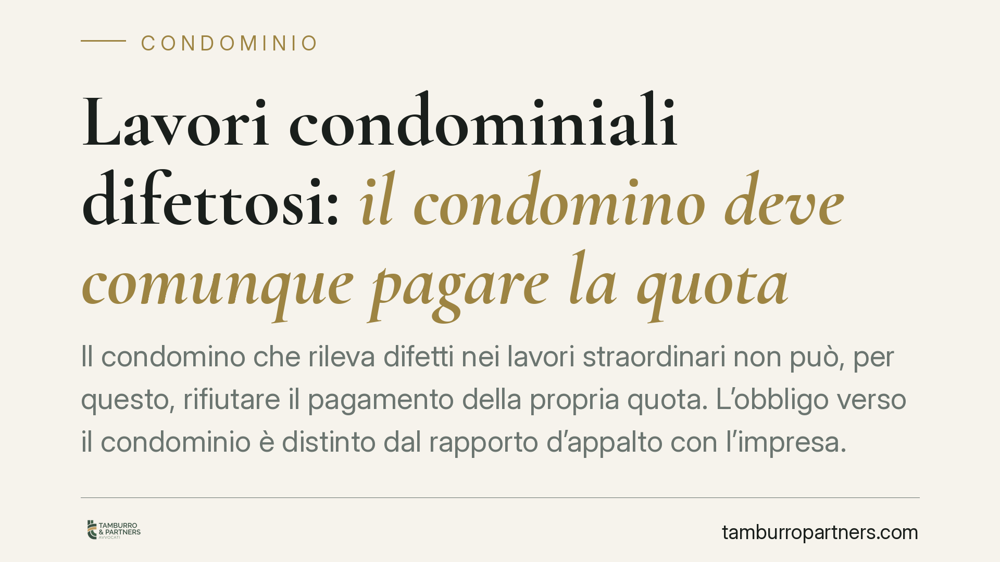

Lavori condominiali difettosi: il condomino deve comunque pagare la quota
Il condomino che rileva difetti nei lavori straordinari non può, per questo, rifiutare il pagamento della propria quota. L'obbligo verso il condominio è distinto dal rapporto d'appalto con l'impresa. È un principio consolidato in giurisprudenza, che pesa sulle scelte pratiche di chi contesta un'opera mal eseguita: la strada corretta è impugnare la delibera nei termini, non trattenere il contributo.

Il fatto
Un condomino contesta la qualità dei lavori straordinari deliberati dall'assemblea e, per protesta, rifiuta di versare la quota a suo carico. La difesa è intuitiva: perché pagare per un'opera realizzata male?
La risposta della giurisprudenza è netta e va nella direzione opposta. Il condomino resta tenuto al pagamento, salvo un percorso ben preciso: l'impugnazione della delibera. I difetti dell'opera, di per sé, non sospendono l'obbligo contributivo.
> Nota sulla fonte. La sintesi di partenza richiama una pronuncia della Cassazione, Sez. II, con estremi (numero e anno) non verificabili su fonte ufficiale al momento della redazione. Per questa ragione l'articolo espone il principio come orientamento consolidato, senza attribuirlo a una singola sentenza dagli estremi incerti. Chi intenda citare il precedente in atti dovrà verificarne numero, anno, sezione e data di deposito su banca dati ufficiale.
Inquadramento normativo
L'obbligo del condomino di contribuire alle spese non nasce da un rapporto di scambio con l'impresa. Discende dagli artt. 1123 e seguenti c.c., che disciplinano la ripartizione delle spese in base ai millesimi e all'uso delle parti comuni, e si concretizza nella delibera assembleare.
L'art. 1137 c.c. governa invece l'efficacia e l'impugnazione della delibera. Le decisioni dell'assemblea sono obbligatorie per tutti i condomini, anche dissenzienti. Chi vuole contestarle deve agire davanti all'autorità giudiziaria entro 30 giorni. Attenzione alla decorrenza: per i condomini presenti che hanno votato contro o si sono astenuti, il termine parte dalla data della delibera; per gli assenti, dalla ricezione del verbale.
Diverso il piano dell'appalto. Il rapporto con l'impresa è regolato dagli artt. 1667 e 1669 c.c., che disciplinano rispettivamente la responsabilità per difformità e vizi dell'opera e la responsabilità per gravi difetti negli edifici. Ma questo rapporto lega il condominio all'appaltatore, non il singolo condomino all'impresa.
Perché non si applica l'eccezione di inadempimento
Il condomino potrebbe invocare l'art. 1460 c.c., che consente di non adempiere se l'altra parte non adempie a sua volta. Il richiamo, però, non regge.
L'eccezione di inadempimento presuppone un contratto a prestazioni corrispettive: due obbligazioni collegate da un nesso di scambio. Tra condomino e condominio questo nesso non esiste. Il contributo non è il corrispettivo di una prestazione dovuta dal condominio al singolo, ma l'attuazione di un obbligo di partecipazione alla gestione comune. Manca la corrispettività, quindi manca il presupposto dell'art. 1460 c.c.
I vizi dell'opera, semmai, riguardano il rapporto condominio-appaltatore. È il condominio, attraverso l'amministratore, a poter agire contro l'impresa per la garanzia. Il singolo condomino non può ribaltare quella pretesa sul proprio obbligo di versamento.
Quando la delibera è impugnabile o nulla
La delibera annullabile va impugnata nei 30 giorni ex art. 1137 c.c. Scaduto il termine, diventa definitivamente vincolante, difetti o meno.
Diverso il caso della nullità, che può essere fatta valere senza limiti di tempo. Secondo l'orientamento delle Sezioni Unite, sono nulle le delibere prive di elementi essenziali, con oggetto impossibile o illecito, o lesive di diritti individuali dei condomini. Sono ipotesi circoscritte: la semplice contestazione della qualità dei lavori, di norma, non vi rientra e resta sul piano dell'annullabilità.
Implicazioni pratiche
Per il condomino che ha rilevato difetti, il messaggio è concreto: non basta lamentarsi, e non serve smettere di pagare. Trattenere la quota espone al decreto ingiuntivo del condominio, con aggravio di spese e interessi, senza risolvere il problema dell'opera mal eseguita.
La tutela contro i vizi passa da due canali distinti: l'impugnazione della delibera, se ci sono i presupposti e nei termini; e la sollecitazione all'amministratore perché attivi la garanzia verso l'impresa. Due binari da non confondere.
Cosa fare in concreto
- Verifica subito i termini. Se vuoi contestare la delibera, calcola i 30 giorni dalla data (se eri presente dissenziente o astenuto) o dalla ricezione del verbale (se eri assente). Il termine è breve e perentorio.
- Non sospendere il pagamento della quota nella speranza di compensare i vizi: rischi il decreto ingiuntivo senza incidere sul problema dell'opera.
- Sollecita l'amministratore per iscritto ad attivare la garanzia contro l'impresa ai sensi degli artt. 1667 e 1669 c.c., fissando i difetti riscontrati.
- Documenta i vizi con fotografie, relazioni tecniche e comunicazioni, così da avere prova utile sia nell'eventuale impugnazione sia nell'azione verso l'appaltatore.
- Consigliamo di far valutare la delibera prima di decidere la strategia: distinguere annullabilità e nullità cambia i termini e i rimedi a disposizione.
Disclaimer
Contributo informativo a cura di Tamburro & Partners Avvocati – Avv. Giuseppe Tamburro. Non costituisce parere legale.
Ogni condominio ha una storia a sé.
Se gestisci un'amministrazione e vuoi un confronto su una specifica questione condominiale, scrivi allo studio. Ti rispondiamo entro un giorno lavorativo.